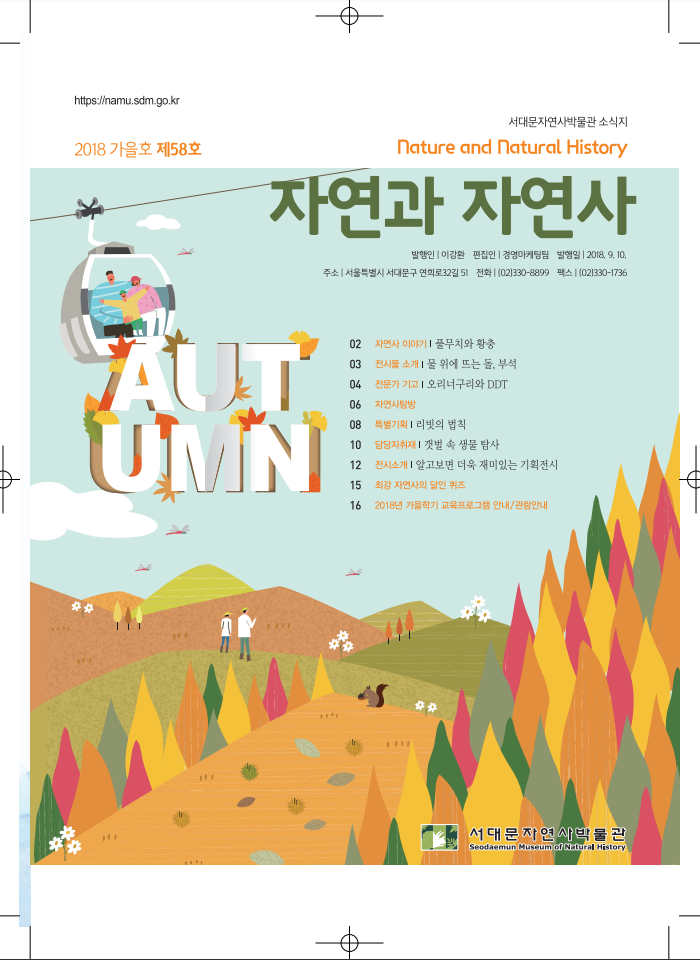

HOME>소식 / 홍보>소식지
소식지
이야기와 소식이 가득 들어있는 소식지를 만나보세요.
- 2020년-65호(여름호)
- 자연사이야기화석이 문화재라고?
- 특별기획자연사박물관이 뭐하는 데니?
- 전문가 기고코로나바이러스감염증-19에 대한 이해와 예방
- 방구석 박물관온라인 해설/ 인스타그램&온라인 전시
- 박물관 소식연간회원 안내&박물관 환경 개선 공사 안내/ 특별전시/ 갤러리월
- 참여하기코로나로 힘든 요즘 모두에게 위로가 될 한마디를 보내주세요
- 자연사 퀴즈최강 자연사의 달인
- 2020년 여름학기 교육프로그램 안내/관람안내
- PDF파일

- 2020년-64호(봄호)
- 자연사이야기대형 해양 포유류 참고래
- 전시물 소개우주의 시작, 우주의 역사
- 전문가 기고태양의 최후 - 백색왜성
- 박물관 길라잡이박물관 연간일정
- 소감문어린이 도슨트 소감문
- 체험교실한강에 사는 동물들, 고니를 찾아서
- 박물관소식연간회원 안내 & 갤러리월/ 소감문 공모 & 1박2일 캠프
- 2020년 봄학기 교육프로그램 안내/관람안내
- PDF파일
- 2019년-63호(겨울호)
- 자연사이야기한겨울 곤충들은 어디로 갔을까?
- 전시물 소개황새
- 전문가 기고소청도에서 시작한 철새이동 연구
- 전시기획지구의 선물, 광물
- 자연사탐방나도 큐레이터! 프로그램
- 특별기획진짜일까? 가짜일까?
- 박물관소식3층 전시관이 단장 했어요
- 2019년 겨울학기 교육프로그램 안내/관람안내
- PDF파일
- 2019년-62호(가을호)
- 자연사이야기아폴로 프로젝트
- 전시물 소개고생대로의 시간여행
- 전문가 기고마법의 버섯 이야기
- 특별기획태양의 정체를 알아낸 세실리아 페인
- 캠프후기소백산 천문대 캠프 후기
- 체험교실생물전문가가 들려주는 생물 이야기
- 박물관소식박물관 "Color, 세상의 모든"에 반하다
- 2019년 가을학기 교육프로그램 안내/관람안내
- PDF파일
- 2019년-61호(여름호)
- 자연사이야기태양을 닮은 - 해바라기
- 전시물 소개한국의 어류
- 전문가 기고한국 고유의 담수어류
- 특별기획잘못된 거리와 우주의 나이
- 전시소식기획전 & 특별전
- 체험교실거미와 곤충을 찾아서
- 자연사 퀴즈최강 자연사의 달인
- 2019년 여름학기 교육프로그램 안내/관람안내
- PDF파일

- 2019년-60호(봄호)
- 자연사이야기공룡을 발굴하는 방법
- 전시물 소개육상의 작은 포식자 족제빗과 동물
- 전문가 기고제주의 새, 매
- 특별기획허블의 동료 밀턴 휴메이슨
- 전시소식추자의 생물 / 동화를 뚫고 나온 생물
- 체험교실제주과학탐험대
- 도슨스 소감문쉽지 않은 도전
- 2019년 봄학기 교육프로그램 안내/관람안내
- PDF파일
- 2018년-59호(겨울호)
- 자연사이야기지구를 덮고 있는 물의 비밀
- 전시물 소개식물의 진화
- 전문가 기고줄기세포를 이용한 심장 질환의 치료
- 특별기획허블-르메트르의 법칙
- 프로그램과학도구 빌려주는 자연사 박물관
- 도슨트 추천도서어린이 도슨트가 추천하는 과학도서
- 박물관소식기린의 집이 생겼어요! 외
- 2018년 겨울학기 교육프로그램 안내/관람안내
- PDF파일
- 
- 2018년-58호(가을호)
- 자연사이야기풀무치와 황충
- 전시물 소개물 위에 뜨는 돌, 부석
- 전문가 기고오리 너구리와 DDT
- 특별기획리빗의 법칙
- 담당자취재갯벌 속 생물 탐사
- 전시소개알고보면 더욱 재밌는 기획 전시
- 자연사 퀴즈최강 자연사의 달인
- 2018년 가을학기 교육프로그램 안내/관람안내
- PDF파일

- 2018년-57호(여름호)
- 자연사이야기스티븐호킹과 블랙홀
- 전시물 소개페넥여우
- 전문가 기고공룡의 재구성
- 특별기획팽창하는 우주/ 공룡의 재발견, 한국의 상어
- 기획전시인류의 우주 탐사기
- 상설전시개편한국의 상어를 소개합니다
- 박물관소식서대문자연사박물관 &ESC외
- 2018년 여름학기 교육프로그램 안내/관람안내
- PDF파일
- 2018년-56호(봄호)
- 자연사이야기꽃도 헷갈려
- 전시물 소개기린
- 전문가 기고정상과 구별을 넘어 다채로운 세상으로
- 외부 기고어린이 도슨트 활동을 돌아보며
- 특별기획자연사박물관과 우주
- 도슨트이야기어린이 도슨트가 추천하는 과학도서
- 박물관소식4월 프로그램 안내
- 2018년 봄학기 교육프로그램 안내/관람안내
- PDF파일
- 2017년-55호(겨울호)
- 자연사이야기지진에 대해 궁금한가요?
- 전시물 소개고래상어
- 전문가 기고2017년 노벨화학상 이야기
- 외부기고'내 고장 탐방' 후기
- 도슨트 이야기어린이 도슨트가 들려주는 지구내부구조
- 박물관 소식언제나 새로운 표본을 만나는 자연사박물관 등
- 자연사 퀴즈최강 자연사의 달인
- 2017년 겨울학기 교육프로그램 안내/관람안내
- PDF파일
- 2017년-54호(가을호)
- 자연사이야기달이 보여주는 최고의 천문현상, 일식
- 전시물 소개건조함에 맞서는 사막의 식물
- 전문가 기고식어도 괜찮아 너의 이름은 화산
- 외부기고소백산 천문대 캠프 후기
- 도슨트 이야기어린이 도슨트가 들려주는 태양계 행성 이야기
- 박물관소식전로체험 프로그램 결과 등
- 자연사 퀴즈최강 자연사의 달인
- 2017년 가을학기 교육프로그램 안내/관람안내
- PDF파일